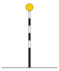

belisha: Belisha beacon
Drawn Drawn 2D elevation from the figures in countries/uk/furniture.json.
Black-and-white banded post with a yellow globe. Both kerbs of a zebra.

| Id | belisha |
|---|---|
| Name | Belisha beacon |
| Category | Street furniture (2D) |
| Group | posts-and-mounts |
| Spec | TSRGD 2016 Sch 14 Pt 2 item 27 (diagram 4007), Pt 4 para 13 |
| Renderer | belisha |
| Dimensions (m) | band 0.3, globe 0.3, lowest_band 0.8, post 2.3 |
| Diagram ref / source page | SI 2016 Sch 14 Pt 4 para 13(3)(a)-(b), printed p494: black, up to 1 m (0.8 drawn); SI 2016 Sch 14 Pt 4 para 13(3)(b), printed p494: 275-335 mm; SI 2016 diagram 4007, printed p461: 2100-3100 mm ground to globe (2.3 drawn); SI 2016 diagram 4007, printed p461: globe 275-335 mm (0.30 drawn) |
| Licence | Project data; figures cite their sources (see Licences) |